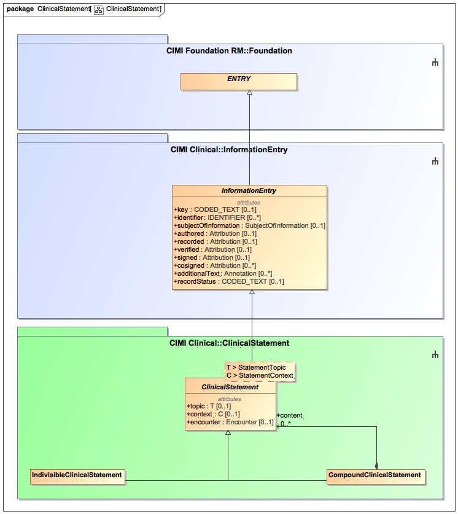
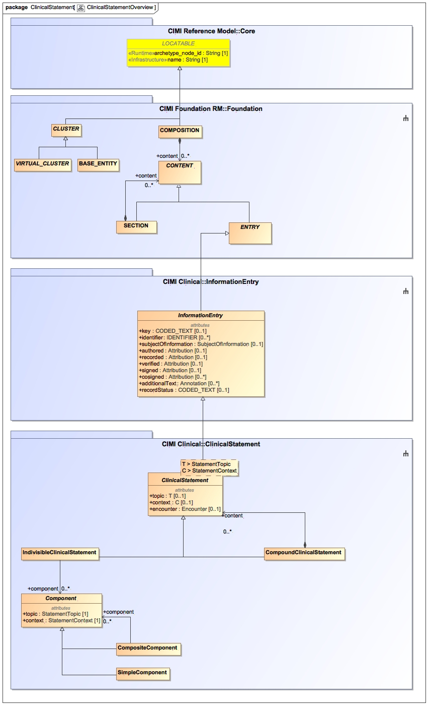

Overview of the Clinical Statement Package
The Clinical Statement Reference Model Pattern is a core CIMI pattern. It represents a statement made about a patient typically documented as an 'entry' in the patient record (see COMPOSITION pattern).
Clinical statements may either be 'indivisible' meaning that they can exist independently but cannot be further broken down into other independent statements.
Examples of indivisible statements include a hematocrit measurement or a complex medication order. 'Compound' clinical statements, on the hand, are collections
of related indivisible or compound clinical statements. Examples of compound clinical statements are panels (which may include other nested panels) and time series.
Clinical statements are composed of following primary components:
- The subject of the statement - generally the subject of the record but this may not always be the case. For instance, a clinical statement may describe a condition
affecting a relative of the patient as is the case in the documentation of family history.
- The clinical topic of the statement - for instance, is this statement about a surgical procedure or a medication-related activity. Alternatively, the statement may
describe the state of the patient.
- The context of the clinical statement - for instance, for procedure topics, did the procedure occur, was it planned, proposed, ordered, not performed, and so on.
If the statement describes a particular finding about the patient, was that finding observed or not observed in the patient? Was the patient at risk of some condition.
- Attribution information relating to the statement itself such as who authored, verified, recorded, or signed the statement.

The following diagram shows the clinical statement inheritance hierarchy which span the three reference model modules:
